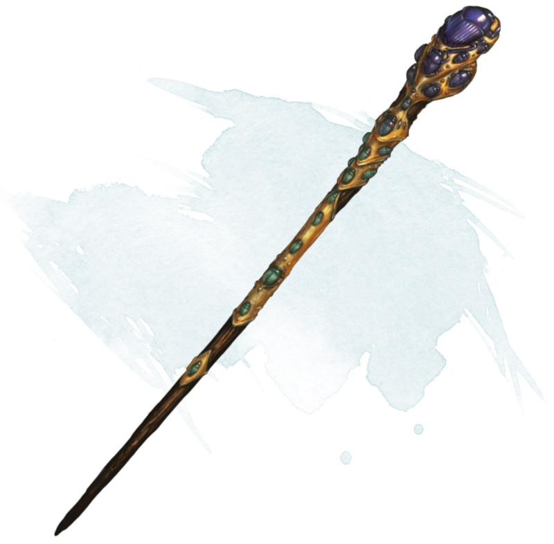

Bâton de grand essaim
[ Staff of Swarming Insects ] [ Bâton du grand essaim ]
Bâton, rare (nécessite un lien avec un barde, un clerc, un druide, un ensorceleur, un magicien ou un occultiste)
Ce bâton possède 10 charges et récupère 1d6 + 4 charges dépensées chaque jour à l'aube. Si vous dépensez la dernière charge, lancez un d20. Sur un résultat de 1, un essaim d'insectes consomme et détruit le bâton, puis disparaît.
Sorts. Tant que vous tenez le bâton, vous pouvez l'utiliser, en prenant une action pour dépenser plusieurs de ses charges, afin de lancer l'un des sorts suivants tout en utilisant votre propre DD des sorts : insecte géant (4 charges) ou fléau d'insectes (5 charges).
Nuage d'insectes. Tant que vous tenez le bâton, vous pouvez utiliser une action pour dépenser 1 charge et ainsi faire apparaître une nuée d'insectes volants inoffensifs dans un rayon de 9 mètres autour de vous. Les insectes restent pendant 10 minutes, obscurcissant fortement la zone pour toutes les créatures, vous excepté. La nuée se déplace en même temps que vous, et reste centrée sur vous. Un vent d'au moins 15 kilomètres par heure disperse la nuée, mettant un terme à l'effet.
Sorts. Tant que vous tenez le bâton, vous pouvez l'utiliser, en prenant une action pour dépenser plusieurs de ses charges, afin de lancer l'un des sorts suivants tout en utilisant votre propre DD des sorts : insecte géant (4 charges) ou fléau d'insectes (5 charges).
Nuage d'insectes. Tant que vous tenez le bâton, vous pouvez utiliser une action pour dépenser 1 charge et ainsi faire apparaître une nuée d'insectes volants inoffensifs dans un rayon de 9 mètres autour de vous. Les insectes restent pendant 10 minutes, obscurcissant fortement la zone pour toutes les créatures, vous excepté. La nuée se déplace en même temps que vous, et reste centrée sur vous. Un vent d'au moins 15 kilomètres par heure disperse la nuée, mettant un terme à l'effet.
Dungeon Master´s Guide (SRD)
